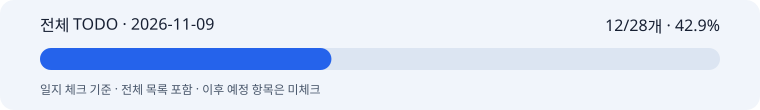

합성형 연출·광고 글꼴 저장 실험 검토 · 사후 기록일 2026-11-12
작업일: 2026-11-09 (KST) · 이름: 박지수 · 팀: 고급프로젝트 2팀.
기록일: 2026-11-12. 누락 일지의 사후 기록이며 원본 작업일·커밋일·기록일을 구분한다. 보고일 말까지 확인 가능한 자료만 사용하고 오늘의 성과를 과거 날짜에 넣지 않는다.
이미지 연출과 한글 합성 실험 담당. 저장 실험의 실행 결과와 서비스 적용 여부를 구분한다.
11/09자로 보관된 합성형 파일럿에서 AV·MD 두 제품의 생성 성공 기록을 확인했다. AV 28.29초·5,350토큰·추정 $0.069962, MD 30.46초·5,378토큰·추정 $0.070102다. 실제 청구액은 둘 다 미확인이다.
같은 자료에 로컬 합성 영수증과 결과가 있다. 개별 이미지 생성·합성 성공을 전체 서비스 E2E나 제품 라벨 보존 인수로 쓰지 않는다.
날짜별 공개 코드 반영·팀 수신은 이 로컬 실험 자료만으로 확인할 수 없다. 저장된 실행 기록과 원격 게시를 분리한다.
활성 체크: 12/28개 · 42.9%. 이 수치는 일지 체크이며 코드/제품 전체 완성률이나 당일 자기평가가 아니다.
11/05 재분류 이후 현행 MVP·고도화7개·공동 검증/인수만 활성으로 센다. 과거·비적용·보류는 제외하며 전체 목록에 남긴 원문을 보존한다.
활성 체크: 12/28개 · 42.9%

전체 TODO · HTML 전체 목록 · 진행률 데이터 · 날짜별 근거
본인 자기평가: 미확정. 당일 0·25·50·75·100% 평가가 제공되지 않아 임의의 숫자를 만들지 않았다. 확인된 작업 결과는 2번에 적었으며 자동 TODO 비율로 대체하지 않는다.
카피 영역의 단순함과 원본 제품 형태·라벨 유지, 합성 글꼴·크기의 확인이 필요했다. 당일 팀원과의 최종 합의나 채택은 별도 자료가 없어 미확인이다.
조건을 개선한 광고 이미지 한 장은 후보이며 여러 제품의 반복 품질을 보장하지 않는다. 시간·사용량·추정비용의 출처를 함께 남겨야 한다.
실제 청구와 독립 품질 평가, 팀 배포 반영을 연결한 근거가 부족하다. 로컬 실험 수치를 서비스 전체 성능으로 쓰지 않는다.
M1 10/30·M2 11/06은 목표일 이력이다. 미확인 표본·합격 기준·청구·공동 인수는 완료로 처리하지 않는다.
저장된 제품별 결과와 합성 영수증을 비교 가능한 근거로 보존했다. 당일 발표 여부는 미확인이다.
당시 후속 계획: 제품 형태·재질·색·연출을 분리해 비교하고 합성 텍스트의 대비와 위치를 점검한다.